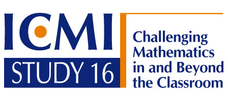
The following International Programme Committee has been appointed by the ICMI Executive to administer the Study. It comprises
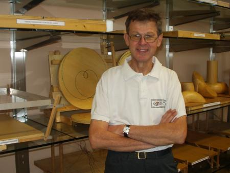
Ed Barbeau is Professor Emeritus of Mathematics at the University of Toronto in Canada. He has been involved in the preparation of mathematical contests at the middle, secondary and teritiary levels, given many presentations and short courses to students and teachers at these levels, and helped prepare competitors for the International Mathematical Olympiad and the undergraduate Putnam Competition. He was the Academic Chair and Chief Coordinator at the 1995 International Mathematical Olympiad in Toronto.
He is coauthor, with Murray S. Klamkin and William O. Moser of 500 Mathematical Challenges, published by the Mathematical Association of America. He contributed two books to the Springer-Verlag series of problem books, Polynomials and Pell's Equation, that were designed to encourage student investigations in a coherent mathematical area. In the early 1970s, he ran the Gelfand Club of Ontario, a correspondence program in which students were sent challenging problems and encouraged to send in written solutions to be marked. Currently, he runs a problems correspondence program for secondary students.
His teaching has included a Master's level course for practising teachers on mathematical problems, and an undergraduate course for student intending to become elementary teachers. In the latter course, he had to reach students with various levels of mathematical background. However, he wanted to encourage such students to solve problems and experience mathematics, and so had to be careful to find material at the appropriate level to persuade them that mathematics could be both accessible and rewarding.
Some examples of material can be found on the website Ed Barbeau.
Email: Ed Barbeau
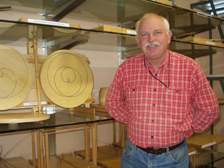
Peter Taylor was born in Adelaide in 1947 and obtained a PhD in Applied Mathematics from the University of Adelaide in 1972. He has since then been an academic at the University of Canberra. He is now Executive Director of the Australian Mathematics Trust, based at the University of Canberra, where he is Professor of Mathematics and Adjunct Professor in Education. He chairs the Education Advisory Committee of the Australian Mathematical Sciences Institute and Co-Chaired at ICME 10 in Copenhagen (2004) Discussion Group 16 The Role of Competitions in Mathematics Education.
He was from 1979 to 1994 the Chairman of the Problems Committee of the Australian Mathematics Competitions, one of the largest competitions for students of all standards, reaching 40 countries. He is Immediate Past President of the World Federation of National Mathematics Competitions, an Affiliated Study Group of ICMI.
He has written two books with Jordan Tabov, of Bulgaria, entitled Methods of Problem Solving and a number of books of problem collections with solutions from national and international competitions. He also runs enrichment classes for talented students in Canberra who are training for national and international Olympiads. The Trust which he directs administers a large range of enrichment activities for students of all standards, including competitions and Olympiads, enrichment courses (beyond the curriculum), journals, maths days etc.
More information can be found at Peter Taylor.
Email: Peter Taylor
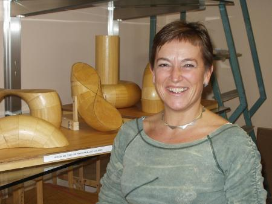
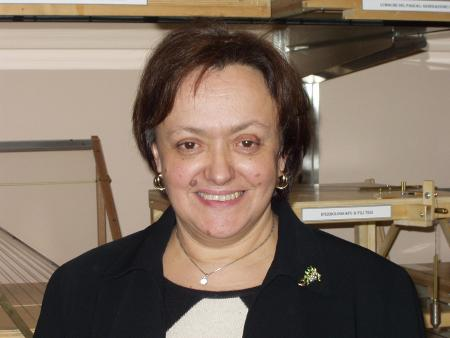
Maria G. (Mariolina) Bartolini Bussi is a full professor of Didactics of Mathematics at the Faculty of Education of the University of Modena-Reggio Emilia.
She directs the Laboratory of Mathematical Machines at the Department of Mathematics in Modena, with a collection of dozens of geometrical instruments reconstructed from historical sources (see here). She is especially interested in teaching and learning processes with the use of both classical and computer-based instruments. The mmlab has prepared several public exhibitions of Mathematical Machines, with thousands of visitors. The mmlab is open to schools for interactive geometry activity. Since 2003 she has been twice the national coordinator of two-year projects about mathematics education (2004-2005 and 2006-2007).
Two projects directed by her have been shortlisted for international awards in 2004: the Altran award for innovation and the Pirelli INTERNETional award. She is a member of the editorial board of Educational Studies in Mathematics, Recherches en didactique des Mathématiques, Journal of Mathematics Teachers Education; of the International group on the Psychology of Mathematics Education (Vice president 1993-1995), and of the IPC of ICME-10.
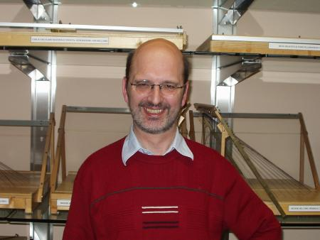
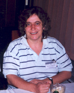
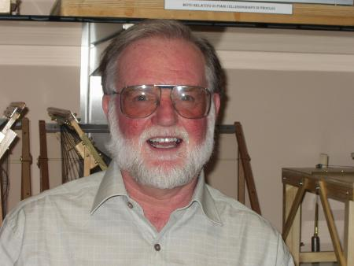
Derek Holton was born in England but moved to Australia the day after he did his final O level paper, Latin. He failed Latin but went on to get a BSc, MA and Dip Ed at Melbourne University. His PhD was obtained in Montreal at McGill. He spent 15 years on the staff at the maths department in Melbourne before taking up the chair of pure mathematics at the University of Otago in Dunedin, New Zealand.
His combinatorial research interests have been in graph theory (cycles and matchings) and permutation patterns. He has also worked in mathematics education across a range of topics including problem solving and gifted children. He chaired the ICMI Study that looked into the teaching and learning of mathematics at university level.
In New Zealand he was involved in the formation of the group that is responsible for sending teams to the IMO. He has also served on a number of national committees relating to mathematics in school, such as the numeracy development reference group and the new curriculum group. He is also one of the group who produce the ongoing web site which is a professional development site for New Zealand teachers.
When he's not thinking about maths or maths education he likes to get out in the field with his new digital camera and photograph birds (the flying kind).
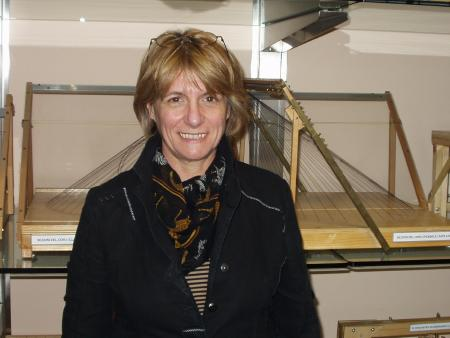
Martine Janvier is a mathematics teacher in a middle school.
She is working in a research group of IREM (Institut de Recherche sur l’Enseignement des Mathématiques), and is co-founder of CIJM (Comité International de Jeux Mathématiques) of which she is now general secretary.
Martine co-organizes each year a mathematical contest in her region and is engaged in the diffusion of the scientific culture through astronomy (the Hands On Universe European project).
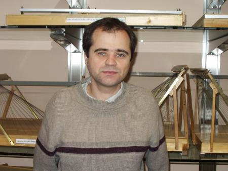
Vladimir Protasov, Associate Professor at the Department of Mechanics and Mathematics, Moscow State University, Russia. He works in a close collaboration with the Independent University and Moscow Centre of Continuous Mathematical Education.
For many years he has worked on the Organizing Committees of mathematical olympiads in Russia, such as All-Russian, Moscow regional, Soros Olympiads etc.
He is an author of many olympiad problems (mostly in geometry) and one of the organizers of Sharygin Geometrical Olympiad (since 2005). He has given many courses and mini-courses for high school students and teachers.
For example, Poncelet-type theorems, Extremal problems in Geometry, Geometry of convex objects (for students), Teaching geometry for beginners, How to create mathematical problems? (for teachers). He regularly publishes papers in educational and popular journals (Kvantum, Mathematical Education etc.) and small mathematical books for students: Geometrical problems for 7th grade (1997, joint with I.Sharygin), Geometrical problems. A circle. (2003), Maxima and minima in geometry (2005).
At the 10th ICMI Congress (Copenhagen, July 4-11, 2004) he gave a regular lecture (jointly with I.Sharygin) Does the school of XXIst century need Geometry?.
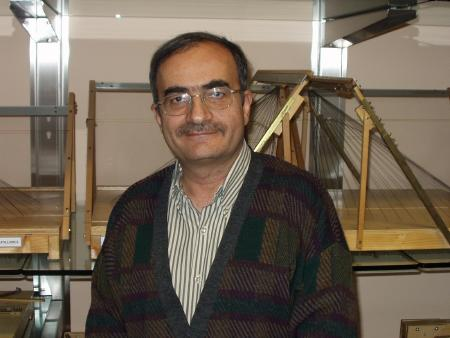
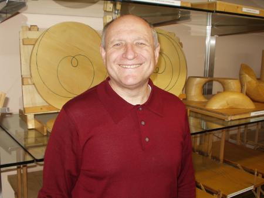
Mark Saul grew up in New York City (the Bronx), got his BA from Columbia University and Ph.D. from New York University. He then spent 35 years in and around New York, teaching mathematics in classrooms from grades 3 through 12. He served as President of the American Regions Mathematics League, mathematics field editor of Quantum (the English-language version of the Russian journal Kvant), a board member of the National Council of Teachers of Mathematics, and a member of the Mathematical Sciences Education Board for the National Research Council.
Most recently, he served as a program director for the National Science Foundation, where his portfolio included the Presidential Awards for Excellence in Mathematics and Science Teaching. He is a 1984 recipient of that award, the nation's highest honor for work in the classroom. Internationally, he initiated a student exchange program between Russian and American students and has done consulting work in Taiwan, Botswana, South Africa, and India.
Publications include several problem books and an elementary text on trigonometry, co-authored with I.M. Gelfand. More recent work includes curriculum development with Educational Development Center and the development of an internship program for high-ability students in Shanghai. He is currently a Senior Scholar for the John Templeton Foundation.
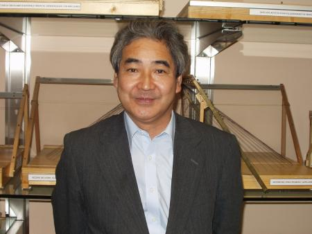
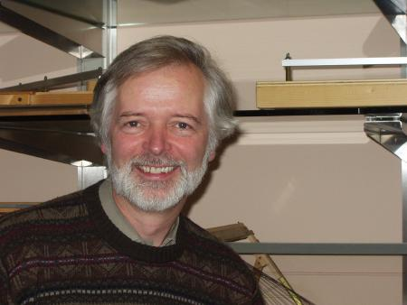
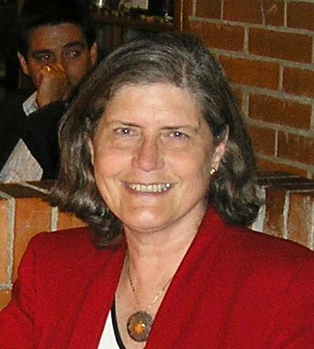
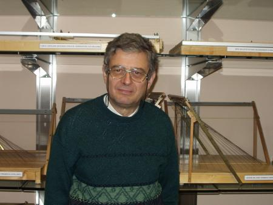